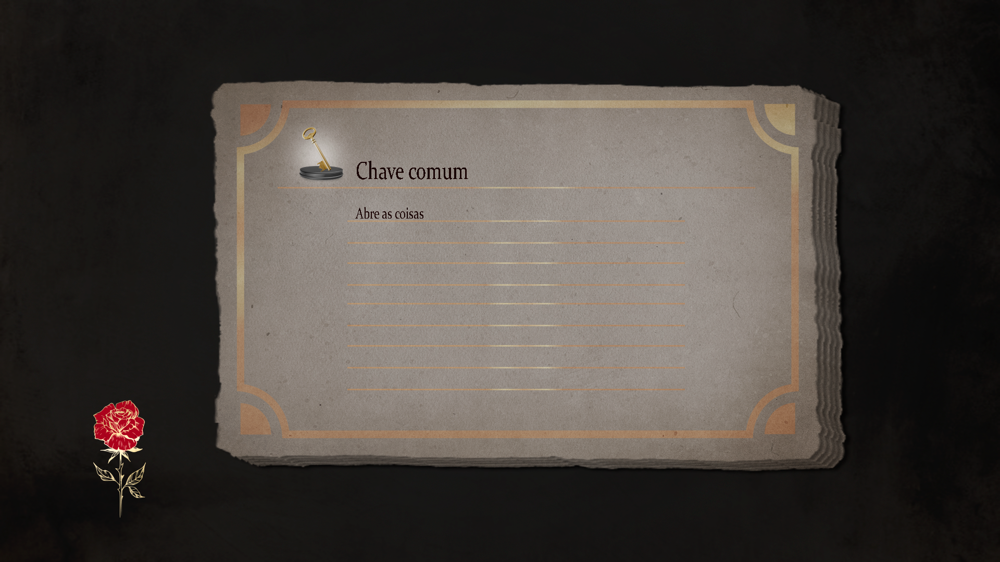
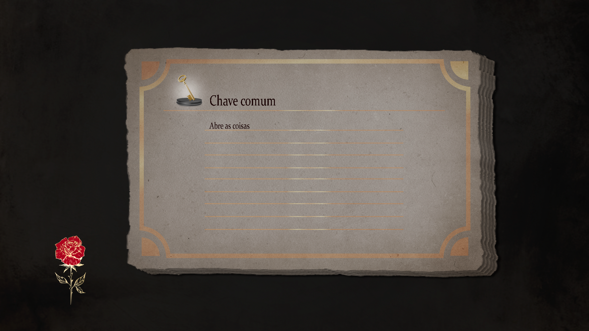

Previous Page
Previous Page
Previous Page
Previous Page


 

Izi: The Two Tales is a SoulsLike(Action-RPG) open world game.
It takes reference in games like Dark souls, bloodborne and Elden ring, also features a 2 main character storytelling system.
Engaging combat and boss fight
Item and level system
Development Status: Demo released in 2021, project still in development.
Engine and Programming Language: Unity, C#.
As the solo programmer I've worked from the ground up into all modules of the game, and game/level design
Due the large scale, I rely heavily in design patterns for code scalabily and maintenance.